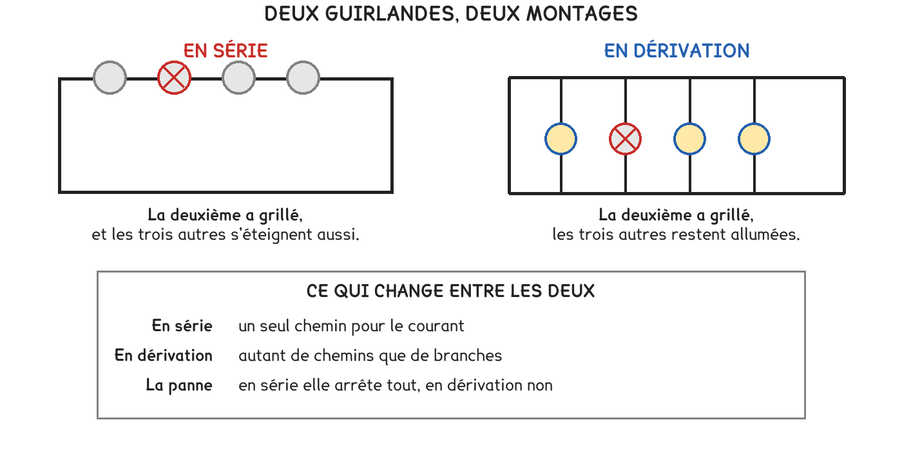

CAP Électricien · 1re année
Un seul chemin, ou plusieurs. Toute la différence tient là, et elle se voit le jour où une ampoule grille.
3 exercices · 2 figures
Savoirs travaillés
Deux guirlandes, deux montages. En série, un seul chemin pour le courant ; en dérivation, autant de chemins que de branches.

Une ampoule grille. En série, tout s’éteint — le chemin est coupé. En dérivation, les autres restent allumées : leur chemin à elles est intact.
Une seule question tranche : combien de chemins le courant peut-il prendre ? En série il n’y en a qu’un, donc tout le monde dépend de tout le monde. En dérivation chaque branche a le sien, et ce qui arrive à l’une ne regarde pas les autres.
Une installation de logement est toujours en dérivation. Si elle était en série, changer une ampoule éteindrait la maison entière — et chaque appareil recevrait une part de tension au lieu des 230 V dont il a besoin.
Exercice · AU
Vous achetez une guirlande. Laquelle tient encore quand une ampoule grille : celle en série, ou celle en dérivation ?
Exercice · AU
Les prises d’un appartement sont toutes montées de la même façon. Série ou dérivation ?
« En série » ne veut pas dire « l’un après l’autre dans la pièce ». Ce qui compte est le nombre de chemins, pas la place des appareils : deux prises côte à côte peuvent être sur deux branches.
Exercice · AU
En une phrase : qu’est-ce qui se passerait dans un appartement câblé en série ?
Quatre symboles suffisent pour tout schématiser cette année : la pile — deux traits, un long et un court —, la lampe — un rond avec une croix —, l’interrupteur — un trait qui se lève — et le fil, un trait droit.
Devant un circuit, une seule question : combien de chemins ? La réponse décide de tout le reste.
Ce site rappelle la méthode. Aucun corrigé, rien n'est noté.